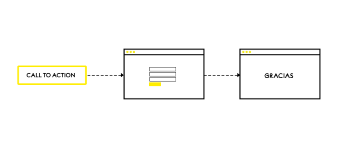
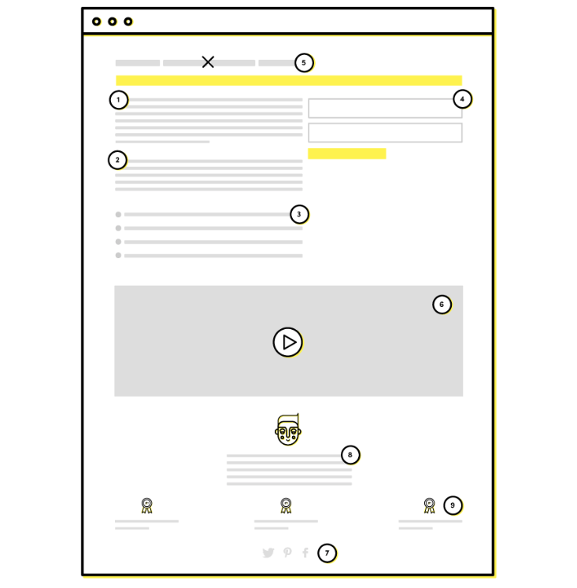

Referencias


Una landing page, o página de aterrizaje, es una página web diseñada específicamente para convertir visitantes en leads.
Su razonamiento es sencillo: si ofrecemos algo que seduzca al usuario, éste estará más dispuesto a dejar información a través de un formulario, si con ello va a poder acceder al mismo y a otros contenidos de interés.
Esta página nos ayuda a convertir a los usuarios en clientes finales, de ahí la importancia de conseguir crear una landing page que convierta de verdad.
Veámoslo con un ejemplo: El usuario accede a un post escrito en nuestro blog o página web sobre cómo hacer una estrategia de marketing de contenidos. A continuación, decide que desea ampliar la información, por lo que hace clic en un call-to-action de un ebook sobre “la estrategia de marketing de contenidos perfecta” que lo dirigirá a nuestra landing page.
Finalmente, esta página le pedirá al usuario que nos envíe su información de contacto para descargar nuestro contenido. Acto seguido, será redirigido a una página de gracias con el enlace de descarga, convirtiéndose en un valioso lead.
El número de descargas que registramos se traduce en información personal de potenciales clientes. Es así como conseguimos la oportunidad perfecta para contactar con ellos directamente y de forma personalizada, para poder influir en su decisión de compra.
Existen muchos tipos de landing pages (casi todos dependen de la herramienta con la que se creen en cuanto al diseño), pero la gran mayoría de ellas podríamos categorizarlas en dos grandes grupos:
Este tipo de landing pages son las que encontramos dentro de una navegación habitual por nuestra página web, ya sea haciendo clic en un CTA, accediendo a una de nuestras categorías, al final de un post…
Es habitual que el diseño de estas páginas siga la estética de la web en la que se encuentran y se suele acceder a ellas de manera orgánica, ya sea por la propia navegación o por búsquedas relacionadas en un motor de búsqueda, por eso es vital que estén optimizadas correctamente.
Lo más característico de este tipo de landing pages es que son páginas web que se han creado expresamente para un propósito concreto, que suele ser la captación de leads, y se encuentran fuera de la navegación por nuestra página web principal.
Debido a esto, es aún más importante que este tipo de landing pages contengan toda la información necesaria para seducir a un usuario y que nos ceda sus datos, además de un CTA donde se recogerán.
Ya que no se encuentran dentro de una web principal, es difícil acceder a ellas de manera orgánica si no es con una búsqueda exacta en un buscador. Para derivar tráfico a este tipo de páginas se suelen utilizar estrategias de paid media o SEM, que conllevan inversión extra.
Sea cual sea la opción que elijas, recuerda que tu landing page debe recoger toda la información necesaria para que tus usuarios decidan cederte sus datos, convirtiéndose en esos leads que tanto deseas.
Se me olvidaba, según la RGDP es obligatorio que nuestros leads nos den su consentimiento explícito a recibir informaciones comerciales, por lo que esta información debe estar muy clara en el contenido de nuestra landing page.
Escribir claro y de manera concisa. Se tratar de hablar el mismo idioma que nuestro usuario, sin excedernos demasiado para que su nivel de expectación no decaiga en ningún momento. Explicar claramente el valor y la importancia de la oferta para las personas. Lo más importante es ofrecer valor a la persona, centrándonos en todo momento en cómo puede sacar rendimiento del contenido que se le ofrece. Utilizar listados para hacer que la información sea fácilmente comprensible. Esto nos ayuda a focalizar la atención del usuario en los puntos que consideramos más importantes y qué más pueden resultarle de utilidad. Se trata de dar relevancia a las bondades y beneficios de nuestro contenido. Seleccionar el número apropiado de campos para el formulario. No debemos caer en el error de pedir una cantidad ingente de información a nuestro usuario que le pueda llegar a echar para atrás. La idea es construir una relación a largo plazo y, para ello, tendremos más oportunidades de intercambiar información. Eliminar el menú principal y el resto de enlaces que puedan distraer al usuario. Con el objetivo principal de centrar la atención en la oferta, todo lo que no aporte valor debe eliminarse para evitar fugas de nuestro usuario. Incluir información multimedia relevante que capte la atención del usuario. El contenido multimedia entra mejor por los ojos. Un buen vídeo o imagen puede ayudar para mejorar la percepción de nuestro usuario. Añadir iconos para compartir en redes sociales. Si el usuario considera el contenido de interés, seguramente quiera compartirlo a través de redes sociales. ¿Por qué no facilitárselo a través de unos iconos al final del contenido de la oferta? Añadir testimonios en caso de que aporten información relevante. Un contenido del que otros ya han disfrutado y sobre el que tienen una buena valoración ayudará a terminar de convencer a nuestras personas. Mostrar premios o reconocimientos recibidos por la organización. Sin caer en el autobombo, no dejes pasar la oportunidad de incluir reconocimientos recibidos por un buen trabajo. El usuario lo valorará y agradecerá.
En definitiva, las landing juegan un papel fundamental en el proceso de conversión de los usuarios que visitan tu web/blog. Su optimización es clave para que consigas leads.